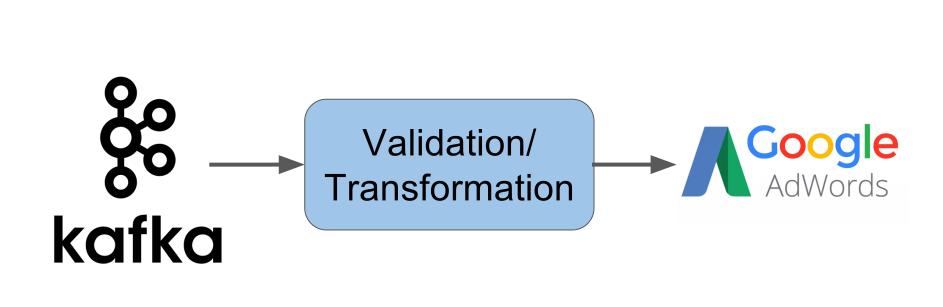

DIGITAL MARKETING AUTOMATION
Placeholder
1. automate repetitive tasks
2. minimize errors and reaction times
DIGITAL MARKETING AUTOMATION
Placeholder
Stefano Bonetti | Dev @ HomeAway
DIGITAL MARKETING AUTOMATION
Placeholder
Stefano Bonetti | Dev @ HomeAway
STREAM DRIVEN DEVELOPMENT
Roll your own reactive pipeline
Stefano Bonetti | Dev @ HomeAway
THE FRAMEWORK
SAMPLE PIPELINE


OFF-THE-SHELF STAGE - TEST
"source" should "read from Kafka" in {
val testProperty: Property = ???
val config = KafkaConfig(...)
val source = PropertySource(config)
val result = source.runWith(Sink.head)
// embeddedKafka - needs a serializer!
publishToKafka(config.topic, serialize(testProperty))
results.futureValue should be testProperty
}
OFF-THE-SHELF STAGE - CODE
object PropertySource {
def apply(config: KafkaConfig): Source[Property, Shutdownable] = {
val kafkaSrc: Source[ConsumerRecord[PropertyKey, Property], Control] =
Consumer.plainSource(settings(config),
Subscriptions.topics(config.topic))
kafkaSrc
.map(_.value)
.mapMaterializedValue { control ⇒
new Shutdownable {
override def shutdown = control.shutdown()
}
}
}
}
CUSTOM STAGE 1 - CODE
object ValidationFlow {
def apply(): Flow[Property, ValidProperty, NotUsed] = {
val service: PropertyValidationService = ???
Flow[Property].map(service.validate)
}
}
CUSTOM STAGE 2 - CODE
object ValidPropertySink {
def apply(config: CassandraConfig):
Sink[ValidProperty, Future[Done]] = {
val repository: ValidPropertyRepository = ???
Flow[ValidProperty]
.mapAsync(config.parallelism)(repository.store)
.toMat(Sink.ignore)(Keep.right)
}
}
GRAPH - TEST
"graph" should "connect the provided stages" in {
val testProperty : Property = ???
val testValidProperty: ValidProperty = ???
val source = Source.single(testProperty)
val flow = Flow[Property].map{_ ⇒ testValidProperty}
val sink = Sink.seq[ValidProperty]
val (_, results) = Graph(source, flow, sink).run()
results.futureValue should contain only testValidProperty
}
GRAPH - CODE
object Graph {
def apply(propertySource: Source[Property, Shutdownable],
validationFlow: Flow[Property, ValidProperty, NotUsed],
propertySink : Sink[ValidProperty, Future[Done]]):
RunnableGraph[(Shutdownable, Future[Done])] = {
RunnableGraph.fromGraph(GraphDSL.create(propertySource, propertySink)
((_, _)) { implicit builder ⇒ (source, sink) ⇒
import GraphDSL.Implicits._
source ~> validationFlow ~> sink
ClosedShape
})
}
}

THANK YOU!
Stefano Bonetti | Dev @ HomeAway